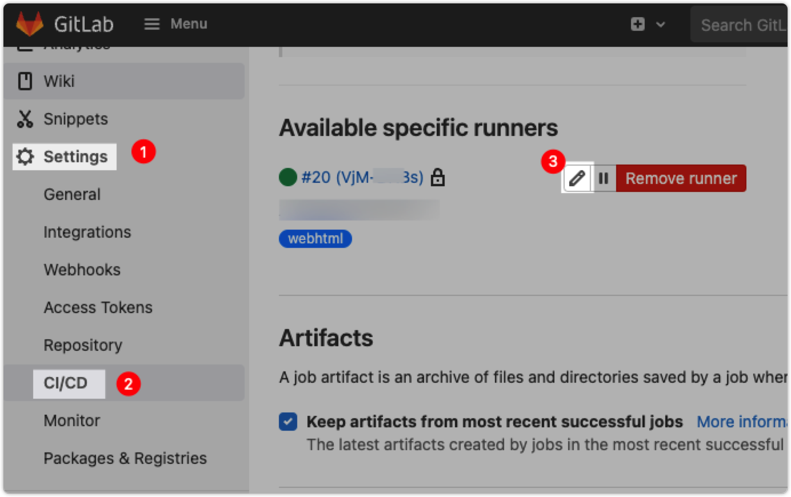
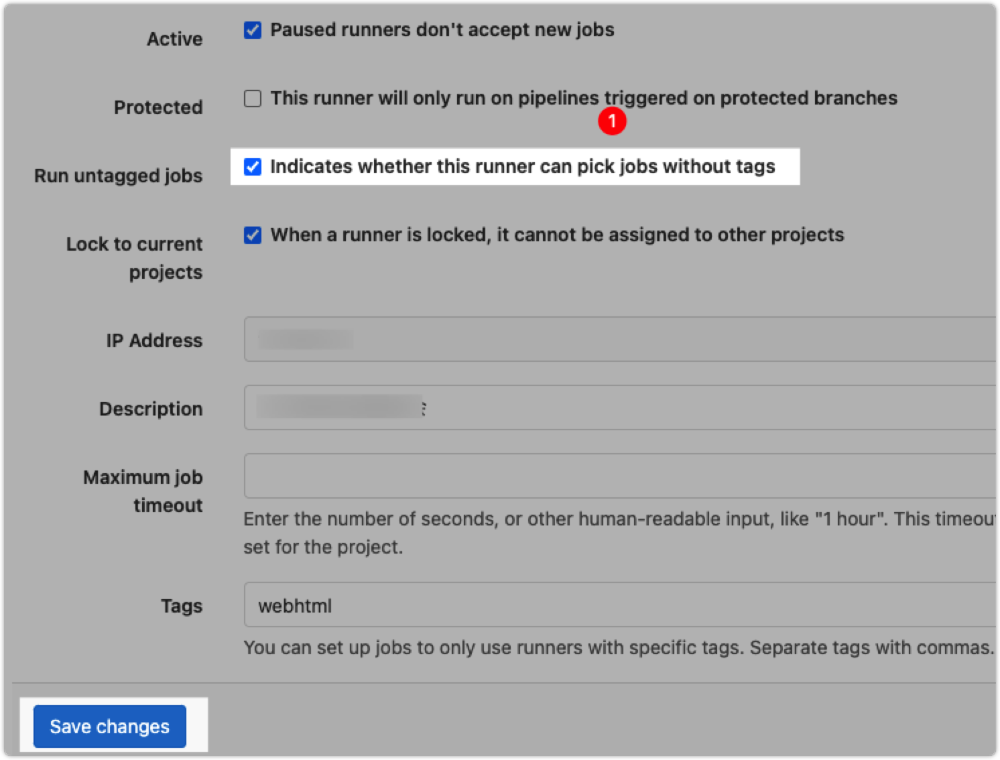

在 Docker 中安装 Gitlab 教程，官方文档，如果你想使用原生安装，教程在这里：CentOS7安装维护Gitlab
docker pull gitlab/gitlab-ce
sudo docker run \
--hostname gitlab.example.com \
--publish 8443:443 --publish 8081:80 -p 2222:22 \
--name gitlab \
--restart always \
--volume $HOME/_docker/gitlab/config:/etc/gitlab \
--volume $HOME/_docker/gitlab/logs:/var/log/gitlab \
--volume $HOME/_docker/gitlab/data:/var/opt/gitlab \
-v /etc/localtime:/etc/localtime \
-d \
gitlab/gitlab-ce:latest
由于端口冲突，重新映射了一个端口 2222，如果不想麻烦，可以事先将 ssh 端口号更改成别的端口号，修改ssh端口号的方法
# 要从之前的：
git clone git@gitlab.example.com:myuser/awesome-project.git
# 改为明确使用 `ssh://` 的 `URL` 方式。
git clone ssh://git@gitlab.example.com:2222/myuser/awesome-project.git
为了克隆不必麻烦，保留 gitlab 的 22 端口映射，将主机的 sshd 的 22 端口映射到容器中去。将主机的 sshd 端口更改为 2222
编辑文件 /etc/ssh/sshd_config，将其中的 #Port 22 注释去掉，将数字 22 更改为 2222，执行下面的命令重启 sshd 服务
systemctl restart sshd
防火墙的规则，添加开发 2222 端口
iptables -A INPUT -p tcp --dport 2222 -j ACCEPT
iptables -A OUTPUT -p tcp --sport 2222 -j ACCEPT
# 再查看下是否添加上去, 看到添加了
iptables -L -n
如果此容器由于权限问题而无法启动，请尝试通过执行以下操作来修复它：
docker exec -it gitlab update-permissions
docker restart gitlab
# 第一种进行入容器执行命令的方法进行手工备份
docker exec -it 容器名或容器id bash # 进入容器
gitlab-rake gitlab:backup:create # 执行gitlab备份命令
# 第二种直接使用外部命令执行，一次完成
docker exec 容器名或容器id gitlab-rake gitlab:backup:create
通过在宿主机上使用 crontab 使用备份命令实现自动备份
添加备份脚本 vi ~/_docker/gitlab/gitlab.backup.sh，将下面内容添加到脚本中，保存之后添加可执行权限 chmod +x gitlab.backup.sh
#!/bin/bash
case "$1" in
start)
docker exec gitlab-ce11.2.3 gitlab-rake gitlab:backup:create
;;
esac
创建定时执行计划
crontab -e # 进入编辑，添加下面内容
# 每天2点备份 gitlab 数据
0 2 * * * $HOME/_docker/gitlab/gitlab.backup.sh start
# * * * * * command
# 分 时 日 月 周 命令
# 其中，
# 第1列表示分钟，1~59，每分钟用*表示
# 第2列表示小时，1~23，（0表示0点）
# 第3列表示日期，1~31
# 第4列表示月份，1~12
# 第5列表示星期，0~6（0表示星期天）
# 第六列表示要运行的命令。
上面两行保存之后，重新载入配置
service crond reload
# or
systemctl reload crond.service
设置只保存最近7天的备份，编辑 vi $HOME/_docker/gitlab/config/gitlab.rb 配置文件，找到如下代码，删除注释 # 保存
# /etc/gitlab/gitlab.rb 配置文件 修改下面这一行
gitlab_rails['backup_keep_time'] = 604800
重新加载 gitlab 配置文件
docker exec 容器名或容器ID gitlab-ctl reconfigure
docker stop gitlab # 停止容器
docker rm gitlab # 删除容器
docker start gitlab # 启动容器
# 编辑 gitlab 容器配置
docker exec -it gitlab vim /etc/gitlab/gitlab.rb
# 重启 gitlab 容器
docker restart gitlab
使用 Docker Compose，可以轻松配置，安装和升级基于 Docker 的 GitLab 安装，官方教程在这里。
第一步： Docker 官方教程安装 Docker Compose。
第二步： 创建 docker-compose.yml 文件，将下面配置复制到文件中 (或者下载官方示例):
web:
image: 'gitlab/gitlab-ce:latest'
restart: always
hostname: 'gitlab.example.com'
environment:
GITLAB_OMNIBUS_CONFIG: |
external_url 'https://gitlab.example.com'
gitlab_rails['time_zone'] = 'Asia/Shanghai'
gitlab_rails['backup_keep_time'] = 259200 # 3 Day, 259200 seconds
registry_external_url 'http://192.168.188.222:5008'
ports:
- '8081:80'
- '8443:443'
- '22:22'
volumes:
- ./gitlab-data/config:/etc/gitlab
- ./gitlab-data/logs:/var/log/gitlab
- ./gitlab-data/data:/var/opt/gitlab
- /etc/localtime:/etc/localtime
第三步： 确保与 docker-compose.yml 文件同一目录下运行 docker-compose up -d 启动 Gitlab
官方教程 创建 docker-compose.yml 文件
version: "3.6"
services:
gitlab:
image: gitlab/gitlab-ce:latest
container_name: gitlab
ports:
- "22:22"
- "80:80"
- "443:443"
volumes:
- /srv/gitlab/data:/var/opt/gitlab
- /srv/gitlab/logs:/var/log/gitlab
- /srv/gitlab/config:/etc/gitlab
- /etc/localtime:/etc/localtime
environment:
GITLAB_OMNIBUS_CONFIG: "from_file('/omnibus_config.rb')"
configs:
- source: gitlab
target: /omnibus_config.rb
secrets:
- gitlab_root_password
gitlab-runner:
image: gitlab/gitlab-runner:alpine
container_name: gitlab-runner
deploy:
mode: replicated
replicas: 4
configs:
gitlab:
file: ./gitlab.rb
secrets:
gitlab_root_password:
file: ./root_password.txt
创建 gitlab.rb 文件
external_url 'https://my.domain.com/'
gitlab_rails['initial_root_password'] = File.read('/run/secrets/gitlab_root_password')
gitlab_rails['backup_keep_time'] = 604800
gitlab_rails['time_zone'] = 'Asia/Shanghai' # 中国的东八区时间
创建 root_password.txt 文件
MySuperSecretAndSecurePass0rd!
确保您与 docker-compose.yml 在同一目录中并运行：
docker stack deploy --compose-file docker-compose.yml gitlab
官方 注册 runner 文档
如果您在 config.toml 中更改配置，则可能需要重新启动运行程序以应用更改。 确保重新启动整个容器，而不是使用 gitlab-runner restart：
docker restart gitlab-runner
Pull the latest version (or a specific tag):
docker pull gitlab/gitlab-runner:latest
Stop and remove the existing container:
docker stop gitlab-runner && docker rm gitlab-runner
Start the container as you did originally:
docker run -d --name gitlab-runner --restart always \
-v /var/run/docker.sock:/var/run/docker.sock \
-v /home/www/gitlab/gitlab-runner/config:/etc/gitlab-runner \
gitlab/gitlab-runner:latest
服务 gitlab-runner 跑起来之后可以注册对应的仓库
docker run --rm -it -v /home/www/gitlab/gitlab-runner/config:/etc/gitlab-runner gitlab/gitlab-runner register
# Runtime platform arch=amd64 os=linux pid=8 revision=943fc252 version=13.7.0
# Running in system-mode.
# Enter the GitLab instance URL (for example, https://gitlab.com/):
# https://g.xxxxx.cn/
# Enter the registration token:
# ze9H4**********
# Enter a description for the runner:
# [7d0472a5e808]: web
# Enter tags for the runner (comma-separated):
# Registering runner... succeeded runner=ze9H44QH
# Enter an executor: docker-ssh+machine, docker-ssh, parallels, virtualbox, docker+machine, kubernetes, custom, docker, shell, ssh:
# shell
# Runner registered successfully. Feel free to start it, but if it's running already the config should be automatically reloaded!
concurrent = 1
check_interval = 0
[session_server]
session_timeout = 1800
[[runners]]
name = "项目名称"
url = "https://g.xxxxx.cn/"
token = "xxx-y1vb"
executor = "docker"
[runners.custom_build_dir]
[runners.cache]
[runners.cache.s3]
[runners.cache.gcs]
[runners.cache.azure]
[runners.docker]
environment = ['GIT_SSL_NO_VERIFY=true']
tls_verify = false
image = "node:12"
privileged = false
pull_policy = "if-not-present"
disable_entrypoint_overwrite = false
oom_kill_disable = false
disable_cache = false
volumes = ["/cache", "/var/run/docker.sock:/var/run/docker.sock"]
shm_size = 0
token 是生成的，必须通过 gitlab-runner 生成 tokenvolumes = ["/cache", "/var/run/docker.sock:/var/run/docker.sock"] 配置添加很重要，解决下面错误：ERROR: error during connect: Get http://docker:2375/v1.40/info: dial tcp: lookup docker on 8.8.8.8:53: no such host
pull_policy = "if-not-present" 策略改为：镜像不存在时才拉取。工作被卡住了，因为你的 runner 有标签，但你的 job 没有。 按照以下 4 个步骤，让您的 runner 在没有标签的情况下运行：


下面是 官方仓库 Docker.gitlab-ci.yml 模板
docker-build-master:
# Official docker image.
image: docker:latest
stage: build
services:
- docker:dind
before_script:
- docker login -u "$CI_REGISTRY_USER" -p "$CI_REGISTRY_PASSWORD" $CI_REGISTRY
script:
- docker build --pull -t "$CI_REGISTRY_IMAGE" .
- docker push "$CI_REGISTRY_IMAGE"
# 运行服务
- if [ $(docker ps -aq --filter name=docker-service-name) ]; then docker rm -rf docker-service-name;fi
- docker run -itd -p 5000:5000 --name docker-service-name "$CI_REGISTRY_IMAGE":latest
only:
- master
CI_REGISTRY_USER Github 用户名 Example: wangchujiangCI_REGISTRY_PASSWORD 密码(personal_access_tokens)，密码是需要通过 Gitlab > User Settings > Access Tokens > Add a personal access token) 生成一个 personal_access_tokens 而不是真正的密码CI_REGISTRY Registry 地址 Example: 192.168.188.222:8070CI_REGISTRY_IMAGE Example: 192.168.188.222:5008/docker/docker-static-service-templatedocker-build:
# Official docker image.
image: docker:latest
stage: build
services:
- docker:dind
before_script:
- docker login -u "$CI_REGISTRY_USER" -p "$CI_REGISTRY_PASSWORD" $CI_REGISTRY
script:
- docker build --pull -t "$CI_REGISTRY_IMAGE:$CI_COMMIT_REF_SLUG" .
- docker push "$CI_REGISTRY_IMAGE:$CI_COMMIT_REF_SLUG"
except:
- master
gitlab ci ERROR: Uploading artifacts to coordinator... too large archive
使用管理员帐户登陆 Gitlab -> Admin Area -> Settings 修改 Maximum artifacts size (MB) 值，然后保存，然而并没有解决，我的问题是 nginx 代理造成的，最终通过修改 nginx 代理配置解决问题：
client_max_body_size 10m;
| 目标版本 | 你的版本 | 支持升级 | 路径 | 注意 |
|---|---|---|---|---|
14.1.6 |
13.9.2 |
13.9.2 -> 13.12.12 -> 14.0.11 -> 14.1.6 |
需要两个中间版本：13.12 和 14.0，然后是 14.1。 |
|
13.12.10 |
12.9.2 |
12.9.2 -> 12.10.14 -> 13.0.14 -> 13.1.11 -> 13.8.8 -> 13.12.10 |
需要四个中间版本：12.10、13.0、13.1 和 13.8.8，然后是 13.12.10。 |
|
13.2.10 |
11.5.0 |
11.5.0 -> 11.11.8 -> 12.0.12 -> 12.1.17 -> 12.10.14 -> 13.0.14 -> 13.1.11 -> 13.2.10 |
需要六个中间版本：11.11、12.0、12.1、12.10、13.0 和 13.1，然后是 13.2.10。 |
假设我是 13.9.2 升级到 14.1.6，通过官方提供的升级路径 => 13.9.2 -> 13.12.12 -> 14.0.11 -> 14.1.6
docker pull gitlab/gitlab-ce:13.12.12-ce.0
docker pull gitlab/gitlab-ce:13.12.15-ce.0
docker pull gitlab/gitlab-ce:14.0.11-ce.0
docker pull gitlab/gitlab-ce:14.0.12-ce.0
docker pull gitlab/gitlab-ce:14.1.6-ce.0
docker pull gitlab/gitlab-ce:14.1.7-ce.0
docker pull gitlab/gitlab-ce:14.1.8-ce.0
docker pull gitlab/gitlab-ce:14.8.2-ce.0
我先将所有的版本下载到本地。先将 13.9.2 升级到 14.0.11，启动的时候会有提示升级需要更改配置：
There was an error running gitlab-ctl reconfigure:
Removed configurations found in gitlab.rb. Aborting reconfigure.
* unicorn['worker_processes'] has been deprecated since 13.10 and was removed in 14.0. Starting with GitLab 14.0, Unicorn is no longer supported and users must switch to Puma, following https://docs.gitlab.com/ee/administration/operations/puma.html.
* unicorn['worker_memory_limit_min'] has been deprecated since 13.10 and was removed in 14.0. Starting with GitLab 14.0, Unicorn is no longer supported and users must switch to Puma, following https://docs.gitlab.com/ee/administration/operations/puma.html.
* unicorn['worker_memory_limit_max'] has been deprecated since 13.10 and was removed in 14.0. Starting with GitLab 14.0, Unicorn is no longer supported and users must switch to Puma, following https://docs.gitlab.com/ee/administration/operations/puma.html.
Running handlers complete
Chef Infra Client failed. 0 resources updated in 12 seconds
通过回滚到 13.9.2 更改配置重新加载配置：
gitlab-ctl reconfigure
启动没有问题再升级到 14.0.11。